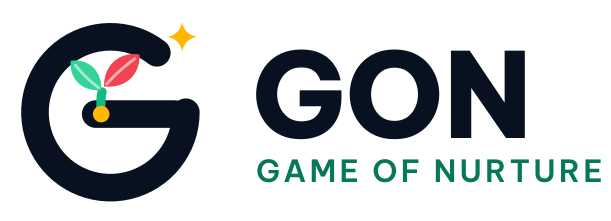
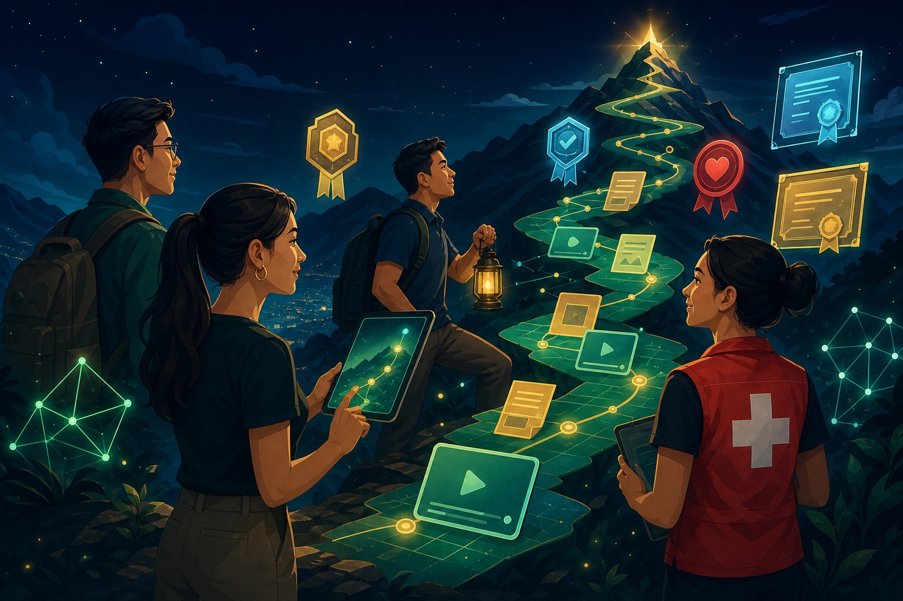
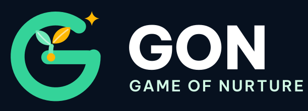
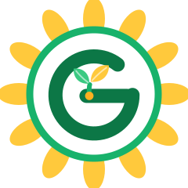

Primary
Nền sáng, web, đối tác và tài liệu.
GON biến mọi text, file, ảnh, video và link thành dự án học tập dạng game: tìm bằng vector 768 chiều, học qua AI Coach & Quest, và lưu lại Proof of Learning trên hành trình Zero → Forever.
Bản v2 thay định vị trẻ em của PR #6 bằng tuyên ngôn trưởng thành lấy cảm hứng từ ZOFO: hiến máu nhân văn, sức khỏe toàn diện, AI Coach, XP/Quest và bằng chứng có trách nhiệm.

Chữ G Midnight là vòng quỹ đạo/điểm tựa; mầm Emerald là tăng trưởng, lá Crimson là lửa hành động và nút Play, chấm Gold là hạt bằng chứng, tia sao là khoảnh khắc bứt phá. Wordmark Be Vietnam Pro ExtraBold thay Baloo 2. Mascot trẻ em đã nghỉ hưu.

Nền sáng, web, đối tác và tài liệu.

Nền Midnight và giao diện game tối.

Huy hiệu hoàn thành, POAP-ready nhưng chỉ “verified” khi đã đối chiếu.
XP là điểm học tập; cấp độ cổ vũ tiến bộ nhưng không thay thế năng lực hay tình trạng sức khỏe.
Prototype hiện dùng embedding deterministic 768D ngay trong trình duyệt để minh họa hợp đồng dữ liệu. Production dùng Gemini embeddings, Google ADK, hàng đợi có idempotency và kiểm chứng citation.
Text · file · ảnh · video · link
OCR/transcript · keyword · intent
Vector + provenance
Full-text + semantic + specificity
11 bước ADK khi chưa có module
Quest · XP · Proof Vault
Ảnh chứng chỉ, Facebook hay YouTube chỉ là nguồn truy vết cho đến khi issuer/chủ sở hữu được đối chiếu.
Tự khai cá nhân.
Có file/link + hash.
GON ghi quiz/quest.
Tổ chức/chữ ký đối chiếu.
POAP/SBT/công khai + provenance.
Prototype chưa nối OAuth/Gemini/ADK/POAP thật. Không dùng số liệu của ZOFO làm của GON; không để AI Coach chẩn đoán; không biến XP thành cam kết tài chính. Cần kiểm tra quyền sử dụng thông điệp ZOFO và tra cứu nhãn hiệu trước thương mại hoá.